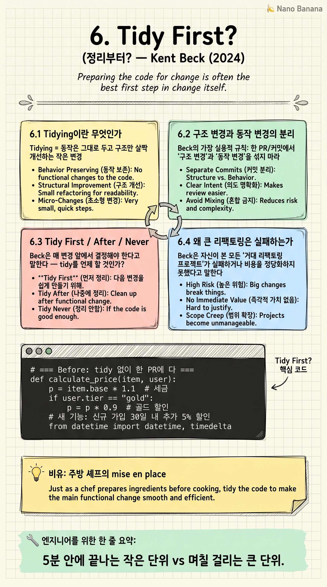

Tidy First?

🎯 학습 목표
- Tidying과 Refactoring의 차이를 안다
- 구조 변경과 동작 변경을 PR 단위로 분리하는 이유를 이해한다
- Beck의 'tidy first / after / never' 결정 트리를 적용한다
- 작은 단위 정리가 큰 리팩토링보다 우월한 이유를 설명한다
- AI 페어 프로그래밍 시 이 패턴이 왜 핵심인지 본다
Kent Beck — TDD·XP·JUnit의 아버지 — 가 2023-2024년에 출판한 짧고 강력한 책. 그는 50년 가까이 소프트웨어를 만들면서 깨달은 한 가지 '작은 정리(tidying)'의 가치를 다룬다.
이 책의 정수: 큰 리팩토링은 거의 항상 실패한다. 너무 큰 변경은 리뷰가 어렵고, 머지가 어렵고, 회귀가 일어나기 쉽고, 무엇보다 중간에 멈추기 어렵다. 대신 'tidying' — 5분 안에 끝나는 작은 구조 정리 — 를 변경의 전·중·후에 자유롭게 끼워 넣으라는 것. AI 시대엔 이 패턴이 페어 프로그래밍 워크플로의 기본 단위가 됐다.
핵심 내용
6.1 Tidying이란 무엇인가
Tidying = 동작은 그대로 두고 구조만 살짝 개선하는 작은 변경. 함수 이름 바꾸기, 변수 추출, 중복 한 줄 제거, 들여쓰기 맞추기, 매직 넘버를 상수로.
Refactoring과 어떻게 다른가? Beck은 둘 다 '동작 보존 구조 변경'이지만, Tidying은 '5분 안에 끝나는 작은 단위'를 가리킨다. Refactoring은 며칠 걸리는 큰 단위. 이 분리가 핵심이다.
Tidying의 본질: 작아서 안전하다. 작아서 리뷰가 쉽다. 작아서 머지 충돌이 적다. 작아서 롤백이 쉽다.
6.2 구조 변경과 동작 변경의 분리
Beck의 가장 실용적 규칙: 한 PR/커밋에서 '구조 변경'과 '동작 변경'을 섞지 마라.
구조 변경 PR: 동작은 1비트도 안 바뀐다. 함수 이름·변수 이름·내부 분해. 테스트 결과는 완전히 동일.
동작 변경 PR: 동작이 바뀐다. 새 기능, 버그 수정, 로직 변경. 테스트가 추가/변경된다.
왜 분리하나? (1) 리뷰어가 정신적 작업을 절반으로 줄일 수 있다. (2) 회귀 디버깅이 압도적으로 쉬워진다 — '이 버그가 구조 변경에서 왔나? 동작 변경에서 왔나?' (3) 롤백 시 '동작은 살리고 구조만 되돌리기'가 가능하다.
Beck의 한 마디: '같은 PR에 둘이 섞이면 둘 다 위험해진다.'
6.3 Tidy First / After / Never
Beck은 매 변경 앞에서 결정해야 한다고 말한다 — tidy를 언제 할 것인가?
Tidy First: 다음 변경을 위해 먼저 정리. 정리하지 않으면 변경이 너무 어렵거나 위험하다. 'Make the change easy, then make the easy change'의 정신.
Tidy After: 변경을 먼저 하고 나중에 정리. 정리할 가치가 있고, 변경의 학습이 정리에 정보를 준다.
Never Tidy: 정리할 필요 없다. 이 영역은 더 이상 손댈 일 없거나, 정리 비용이 ROI를 못 만든다.
이 결정은 매번 의식적이어야 한다. 디폴트가 'tidy everything always'면 토끼굴에 빠진다. 디폴트가 'never tidy'면 mud가 누적된다.
6.4 왜 큰 리팩토링은 실패하는가
Beck은 자신이 본 모든 '거대 리팩토링 프로젝트'가 실패하거나 비용을 정당화하지 못했다고 말한다.
이유 1: 끝이 안 보인다. 작은 단위로 쪼개지 않으면 진행률이 안 보이고, 중간에 멈출 자리가 없다.
이유 2: 정상 개발이 막힌다. 6개월간 '리팩토링 브랜치'를 유지하면 main의 변경과 충돌이 누적된다.
이유 3: 리뷰 불가능. 1만 줄 PR은 누구도 제대로 안 본다.
이유 4: 정치적 risk. '왜 6개월간 새 기능이 안 나오나'에 답할 수 없다.
해법: 같은 결과를 'tidying의 누적'으로 달성하라. 매주 작은 tidy 5개씩. 6개월 뒤엔 같은 정리가 끝나 있고, 동시에 정상 기능 개발도 굴러갔다.
6.5 AI 페어 프로그래밍 시대의 적용
Cursor·Claude Code·Copilot으로 페어 프로그래밍하는 시대에 Beck의 가르침은 두 배로 적용된다.
AI 에이전트에게 '이 거대한 모듈을 리팩토링해 줘'라고 시키면 거의 항상 실패한다. context window를 다 쓰고, 일관성 없는 변경을 만들고, 회귀가 일어난다.
하지만 'tidy first' 접근으로 분리하면: (1) 인간이 변경 의도를 정한다. (2) 에이전트에게 '이 기능 변경을 위해 먼저 이 함수를 추출해 줘' 같은 작은 tidying을 시킨다. (3) 그 tidying을 커밋한다. (4) 그 위에서 실제 동작 변경을 진행한다.
이 워크플로의 미덕: 매 단계가 작아서 에이전트가 정확히 처리한다. 회귀 시 어느 단계에서 깨졌는지 추적이 쉽다. Beck의 50년 통찰이 AI 시대 에이전트 협업 패턴이 됐다는 게 흥미로운 우연이다 — 우연이 아니라, 좋은 엔지니어링은 인간과 AI 모두에게 좋기 때문이다.
💡 비유로 이해하기
프로 셰프는 요리를 시작하기 전에 mise en place — 모든 재료를 미리 손질해서 자기 자리에 정렬해 두는 일 — 를 한다. 양파는 깍둑썰기로, 마늘은 다지고, 향신료는 작은 그릇에.
요리(동작 변경) 자체는 빠르다. 양파를 볶고, 마늘을 넣고, 향신료를 뿌린다. 5분이면 끝. 하지만 mise en place가 안 돼 있으면 요리 도중 손이 멈춘다. 양파를 썰다가 팬이 탄다.
Tidying = mise en place. 동작 변경 전에 코드를 'mise en place' 시키면, 실제 변경은 압도적으로 쉽고 빨라진다. 'Make the change easy, then make the easy change' — Beck의 한 줄이 이 비유의 정수다.
💻 코드 예시
같은 기능 추가를 (a) tidy 없이 한 번에 vs (b) tidy first → behavior change 분리로 해 본다. 같은 결과지만 PR 흐름이 완전히 다르다.
# === Before: tidy 없이 한 PR에 다 ===
def calculate_price(item, user):
p = item.base * 1.1 # 세금
if user.tier == "gold":
p = p * 0.9 # 골드 할인
# 새 기능: 신규 가입 30일 내 추가 5% 할인
from datetime import datetime, timedelta
if user.created_at > datetime.now() - timedelta(days=30):
p = p * 0.95
return p
# → 구조도 어수선하고 새 기능도 들어갔다. 리뷰어가 모든 걸 한 번에 봐야 한다.
# === After: PR을 두 개로 분리 ===
# PR 1 (Tidy First): 동작 무변경 — 구조만 정리
TAX_RATE = 1.1
GOLD_DISCOUNT = 0.9
def apply_tax(price): return price * TAX_RATE
def apply_gold_discount(price, user):
return price * GOLD_DISCOUNT if user.tier == "gold" else price
def calculate_price(item, user):
p = apply_tax(item.base)
p = apply_gold_discount(p, user)
return p
# → 테스트 결과 100% 동일. 리뷰어는 '이름·구조만 본다'고 알고 본다.
# PR 2 (Behavior Change): 새 기능만 추가
from datetime import datetime, timedelta
NEW_USER_DISCOUNT = 0.95
def is_new_user(user):
return user.created_at > datetime.now() - timedelta(days=30)
def apply_new_user_discount(price, user):
return price * NEW_USER_DISCOUNT if is_new_user(user) else price
def calculate_price(item, user):
p = apply_tax(item.base)
p = apply_gold_discount(p, user)
p = apply_new_user_discount(p, user) # ← 진짜 동작 변경은 이 한 줄
return p
# → 리뷰어는 새 기능 한 줄만 본다. 회귀 시 어느 PR이 문제인지 명확.
한 PR로 합쳤을 땐 리뷰어가 '구조와 동작'을 동시에 머릿속에 들고 검토해야 한다. 분리하면 각 PR이 한 가지만 검증하면 된다. 특히 6개월 뒤 회귀 디버깅 시, git bisect가 정확히 'PR 2가 깨뜨렸다'고 가리킨다 — PR 1은 동작이 같다고 보장된 PR이기 때문이다.
🏭 현업에서의 평가
✅ 시니어가 보는 것
- PR이 한 가지 일만 하는가 (구조 변경 OR 동작 변경, 둘 다 X)
- 큰 리팩토링을 작은 tidying으로 분해할 수 있는 능력
- AI 에이전트와 협업할 때 작은 단위로 작업을 쪼개는 워크플로
- 'tidy first / after / never' 결정을 의식적으로 내리는 습관
⚠️ 레드 플래그
- '리팩토링 브랜치'를 몇 달 유지
- 한 PR에 5천 줄 변경 + 새 기능 추가가 섞여 있음
- AI 에이전트에게 '이 모듈 다 다시 짜줘'라고 시키고 결과 통째로 머지
- git history에 의미 없는 'wip', 'fix', 'more' 커밋이 줄줄
🎤 예상 인터뷰 질문
- 최근 '큰 변경'을 작은 단위로 어떻게 쪼갰는지 예시?
- 한 PR에서 구조 변경과 동작 변경이 섞여 들어왔을 때 리뷰 어떻게?
- AI 페어 프로그래밍 시 tidy first 원칙을 어떻게 적용하시나요?
✨ 핵심 요약
Tidying ≠ Refactoring
5분 안에 끝나는 작은 단위 vs 며칠 걸리는 큰 단위.
구조와 동작 분리
한 PR엔 하나만. 두 개 섞이면 둘 다 위험.
Make the change easy
정리가 변경을 쉽게 만든다. 정리 → 변경 순서.
큰 리팩토링은 실패한다
Beck의 50년 관찰. 거의 모든 사례에서.
Tidy First/After/Never
매번 의식적 결정. 디폴트 없음.
Small steps
각 단계가 안전하고 되돌릴 수 있게.
AI 에이전트의 단위
작은 tidy = 에이전트가 정확히 처리하는 작업 크기.
git history가 자산
분리된 커밋이 6개월 뒤 회귀 디버깅을 살린다.